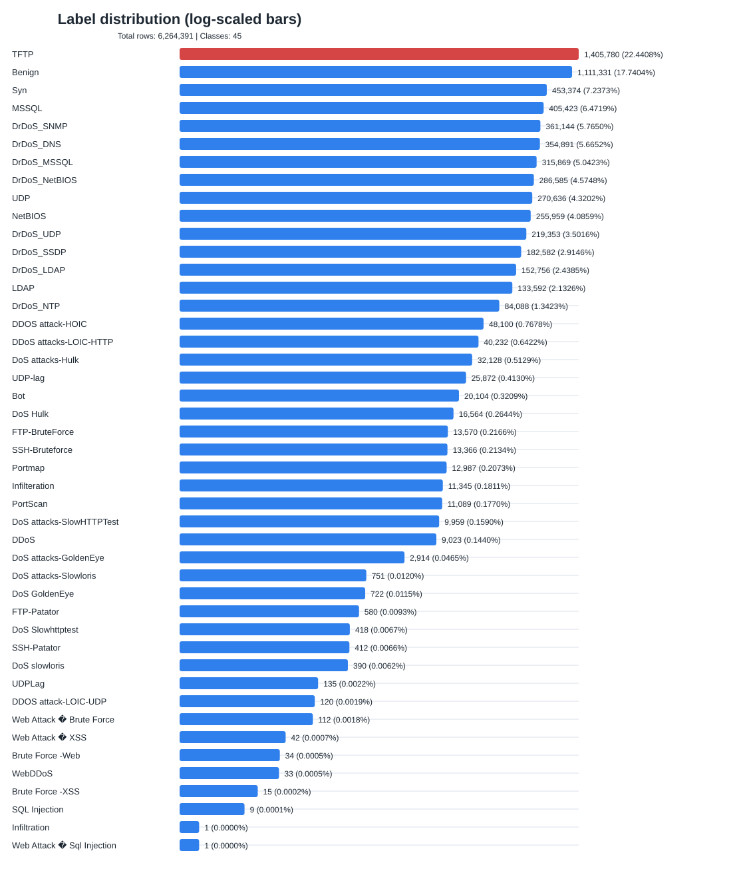
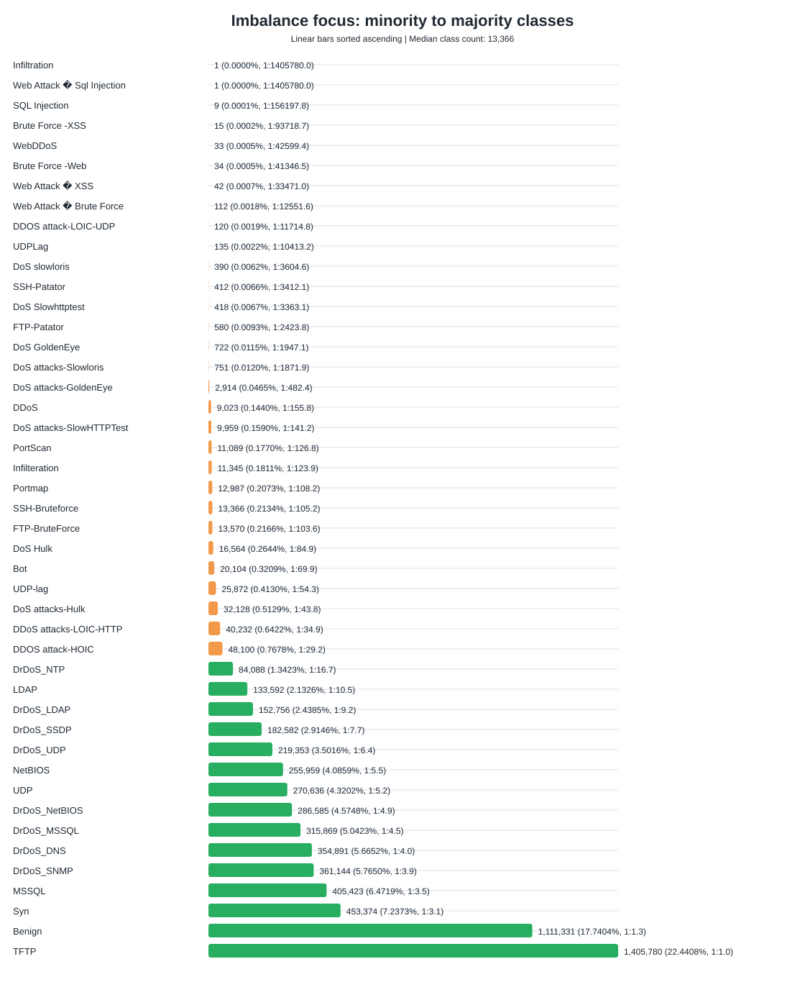
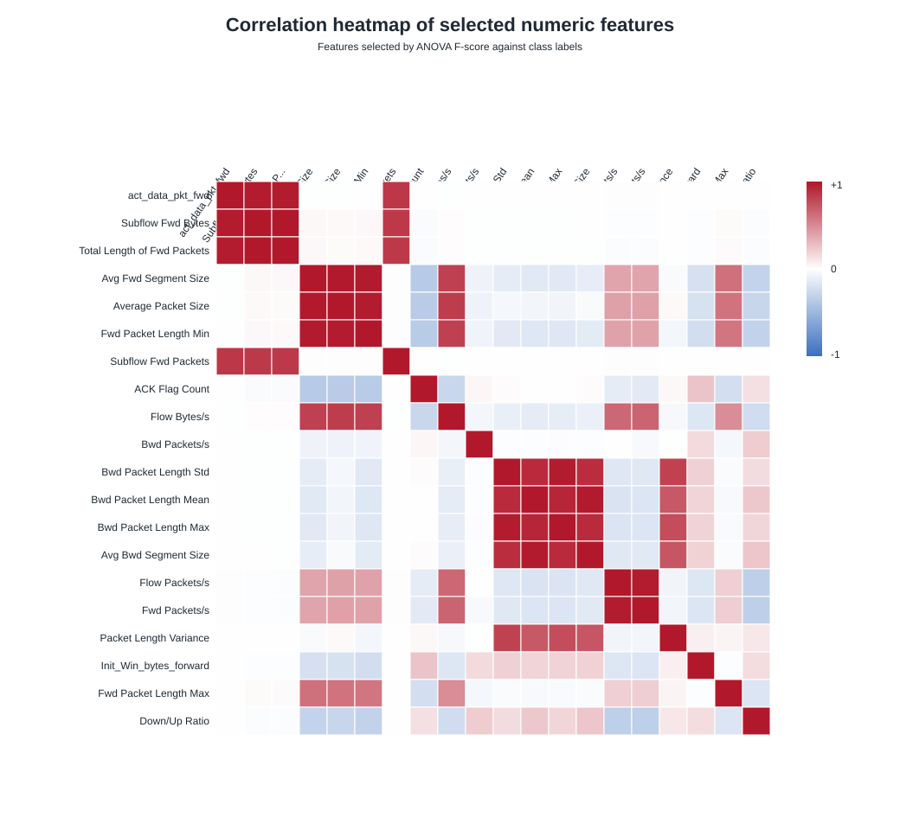

Dataset: D:\Tài liệu UIT\Tài liệu kỳ 6\IDPS\Project\merged_intrusion_dataset_7_percent_canonical.csv
Mất cân bằng tập trung ở các nhãn có tỷ lệ dưới 1%: DDOS attack-HOIC, DDoS attacks-LOIC-HTTP, DoS attacks-Hulk, UDP-lag, Bot, DoS Hulk, FTP-BruteForce, SSH-Bruteforce, Portmap, Infilteration, PortScan, DoS attacks-SlowHTTPTest, DDoS, DoS attacks-GoldenEye, DoS attacks-Slowloris, DoS GoldenEye, FTP-Patator, DoS Slowhttptest, SSH-Patator, DoS slowloris, UDPLag, DDOS attack-LOIC-UDP, Web Attack � Brute Force, Web Attack � XSS, Brute Force -Web, WebDDoS, Brute Force -XSS, SQL Injection, Infiltration, Web Attack � Sql Injection.
Nhãn ít nhất là Infiltration với 1 dòng (0.00002%).
Heatmap được tính trên mẫu 120,000 dòng, chọn 20 feature số có khả năng phân tách nhãn cao nhất.



| Label | Count | Percentage | Ratio to majority |
|---|---|---|---|
| TFTP | 1,405,780 | 22.44081% | 1:1.0 |
| Benign | 1,111,331 | 17.74045% | 1:1.3 |
| Syn | 453,374 | 7.23732% | 1:3.1 |
| MSSQL | 405,423 | 6.47187% | 1:3.5 |
| DrDoS_SNMP | 361,144 | 5.76503% | 1:3.9 |
| DrDoS_DNS | 354,891 | 5.66521% | 1:4.0 |
| DrDoS_MSSQL | 315,869 | 5.04229% | 1:4.5 |
| DrDoS_NetBIOS | 286,585 | 4.57483% | 1:4.9 |
| UDP | 270,636 | 4.32023% | 1:5.2 |
| NetBIOS | 255,959 | 4.08594% | 1:5.5 |
| DrDoS_UDP | 219,353 | 3.50159% | 1:6.4 |
| DrDoS_SSDP | 182,582 | 2.91460% | 1:7.7 |
| DrDoS_LDAP | 152,756 | 2.43848% | 1:9.2 |
| LDAP | 133,592 | 2.13256% | 1:10.5 |
| DrDoS_NTP | 84,088 | 1.34232% | 1:16.7 |
| DDOS attack-HOIC | 48,100 | 0.76783% | 1:29.2 |
| DDoS attacks-LOIC-HTTP | 40,232 | 0.64223% | 1:34.9 |
| DoS attacks-Hulk | 32,128 | 0.51287% | 1:43.8 |
| UDP-lag | 25,872 | 0.41300% | 1:54.3 |
| Bot | 20,104 | 0.32093% | 1:69.9 |
| DoS Hulk | 16,564 | 0.26442% | 1:84.9 |
| FTP-BruteForce | 13,570 | 0.21662% | 1:103.6 |
| SSH-Bruteforce | 13,366 | 0.21336% | 1:105.2 |
| Portmap | 12,987 | 0.20731% | 1:108.2 |
| Infilteration | 11,345 | 0.18110% | 1:123.9 |
| PortScan | 11,089 | 0.17702% | 1:126.8 |
| DoS attacks-SlowHTTPTest | 9,959 | 0.15898% | 1:141.2 |
| DDoS | 9,023 | 0.14404% | 1:155.8 |
| DoS attacks-GoldenEye | 2,914 | 0.04652% | 1:482.4 |
| DoS attacks-Slowloris | 751 | 0.01199% | 1:1871.9 |
| DoS GoldenEye | 722 | 0.01153% | 1:1947.1 |
| FTP-Patator | 580 | 0.00926% | 1:2423.8 |
| DoS Slowhttptest | 418 | 0.00667% | 1:3363.1 |
| SSH-Patator | 412 | 0.00658% | 1:3412.1 |
| DoS slowloris | 390 | 0.00623% | 1:3604.6 |
| UDPLag | 135 | 0.00216% | 1:10413.2 |
| DDOS attack-LOIC-UDP | 120 | 0.00192% | 1:11714.8 |
| Web Attack � Brute Force | 112 | 0.00179% | 1:12551.6 |
| Web Attack � XSS | 42 | 0.00067% | 1:33471.0 |
| Brute Force -Web | 34 | 0.00054% | 1:41346.5 |
| WebDDoS | 33 | 0.00053% | 1:42599.4 |
| Brute Force -XSS | 15 | 0.00024% | 1:93718.7 |
| SQL Injection | 9 | 0.00014% | 1:156197.8 |
| Infiltration | 1 | 0.00002% | 1:1405780.0 |
| Web Attack � Sql Injection | 1 | 0.00002% | 1:1405780.0 |